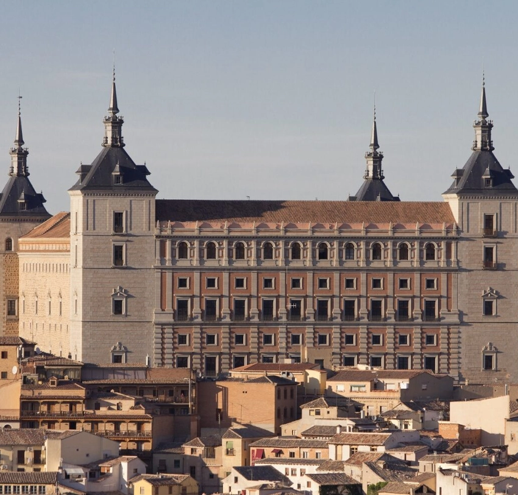
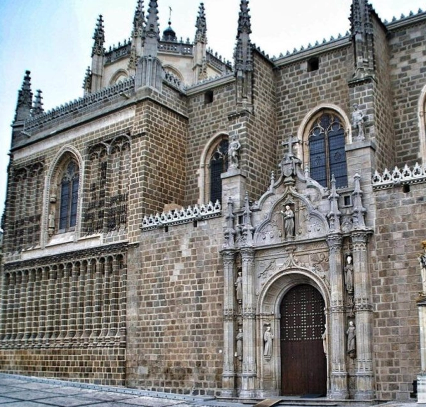
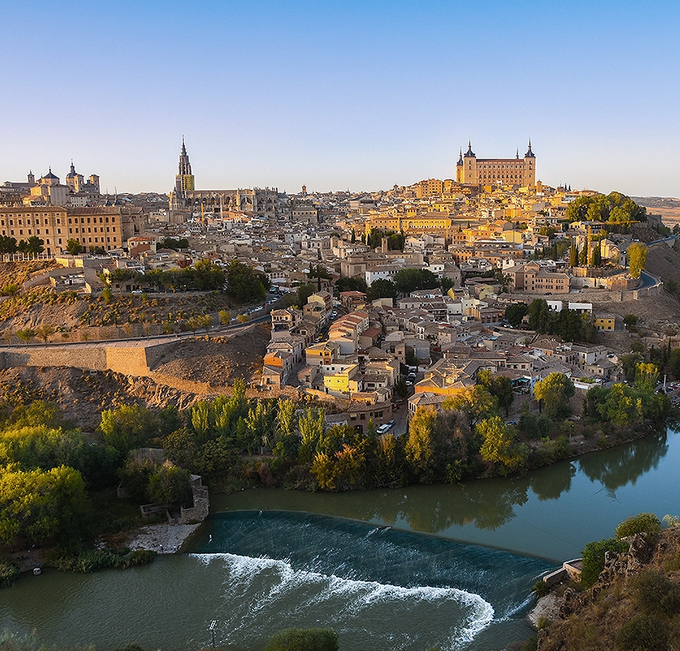
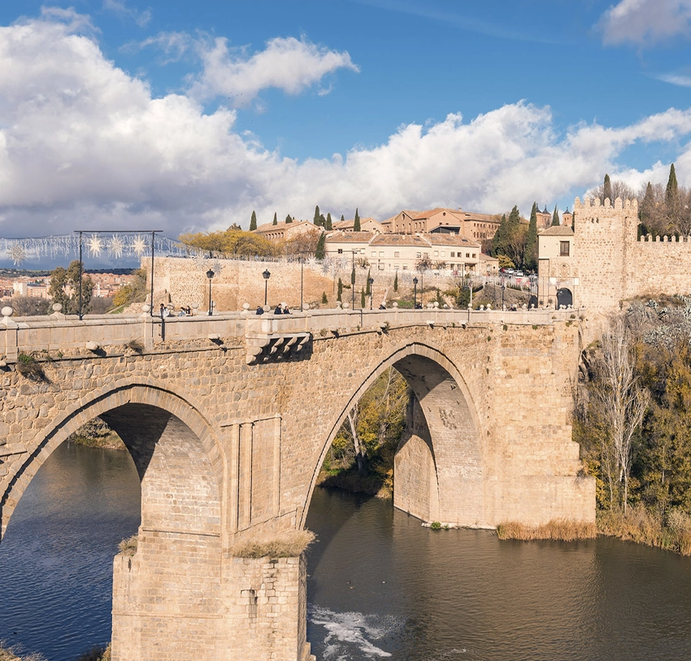
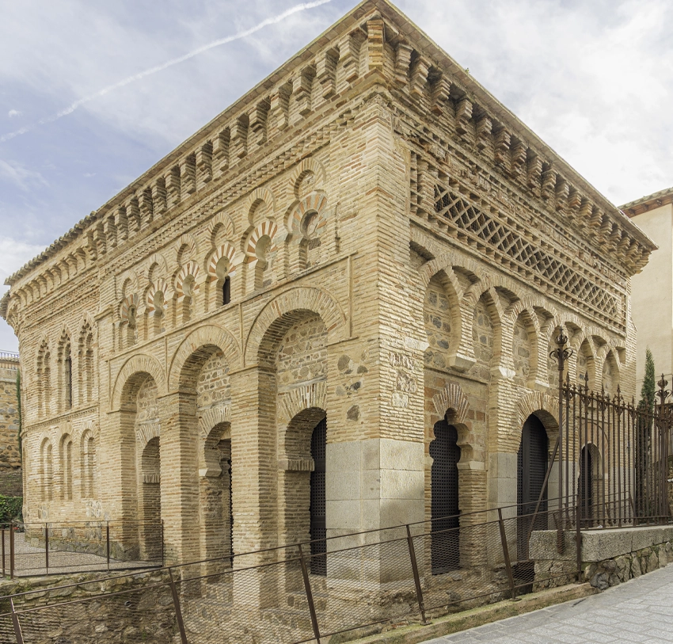

Uno de los grandes símbolos de la ciudad y una de las catedrales góticas más importantes de España. Su interior reúne arquitectura, escultura, pintura y espacios como la Sacristía, el Tesoro o la Capilla Mayor.

Alcázar de Toledo
Situado en la parte más alta de Toledo, el Alcázar domina el perfil de la ciudad. Su presencia monumental permite comprender la importancia histórica y estratégica de Toledo a lo largo de los siglos.

Monasterio de San Juan de los Reyes
Construido por encargo de los Reyes Católicos, destaca por su claustro, su iglesia y la riqueza decorativa del gótico isabelino. Es una de las visitas esenciales del casco histórico.

Mirador del Valle
Uno de los puntos más reconocibles para observar Toledo desde el exterior de la muralla. Desde aquí se aprecia la silueta completa de la ciudad, el río Tajo y sus principales monumentos.

Puente de San Martín
El Puente de San Martín cruza el río Tajo y ofrece una de las entradas más reconocibles a la ciudad histórica. Su estructura medieval y sus torres lo convierten en uno de los puntos más fotografiados de Toledo.

Mezquita del Cristo de la Luz
Este pequeño edificio conserva una parte esencial del pasado andalusí de Toledo. Su arquitectura refleja la convivencia de estilos y culturas que define la historia de la ciudad.
Experiencias
Gastronomía Toledana
Toledo también se descubre a través de sus sabores. La cocina tradicional combina platos castellanos, productos de caza, mazapán y recetas vinculadas a la historia de la ciudad.
Damasquinado y Artesanía
El damasquinado es una de las técnicas artesanales más representativas de Toledo. Sus talleres mantienen viva una tradición basada en el trabajo del metal y la decoración con hilos dorados.
Toledo Nocturno
Cuando cae la noche, las calles del casco histórico adquieren otra atmósfera. La iluminación de los monumentos, los miradores y los recorridos nocturnos muestran una ciudad distinta.